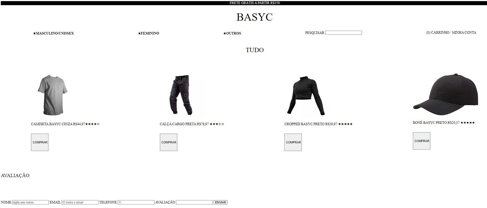

OLÁ, MEU NOME É VINÍCIUS KAWASUGUI SANTIAGO
Engenheiro de Software
SOBRE MIM
Meu primeiro contato com programação está ocorrendo na faculdade, onde tenho a oportunidade de explorar diferentes softwares, como C++, SQL (utilizando o XAMPP), NETBEANS e VSCode. Através de práticas envolvendo cada um desses programas, tenho enfrentado desafios e resolvido problemas técnicos, o que tem sido uma ótima experiência. Meu interesse principal está na programação web, onde estou com projetos em andamento. Tenho dedicado tempo para aprender mais sobre cada software e linguagem envolvida nesse campo. Até o momento, adquiri experiência em C++, SQL, HTML5 e CSS e conhecimentos básicos em JAVA e JAVASCRIPT.
PROJETOS
Este projeto foi inspirado em um site de roupa com o mesmo nome. Utilizei HTML, CSS e JavaScript para criar e estilizar a interface.

| HARD SKILLS |
SOFT SKILLS |
| Programação |
Assertividade |
| CSS |
Comunicação |
| HTML5 |
Entusiasta |
| C++ |
Sociabilidade |
| Raciocinio lógico |
Racional |
FORMAÇÃO:
(CEYP) - Colégio Estadual Cívico Militar Yvone Pimentel
Ensino Médio concluído (2015-2021)
(UC) – UniCesumar
Bacharelado em Engenharia De Software- Em andamento (2022-2025)
 +55 41 988184388
+55 41 988184388